同样是WorkBuddy，为什么别人的用起来就是比自己的更聪明？
人没变，Agent没变，但是任务就是更高效、更准确地完成了，其实这就是系统提示词的作用。
今天，我想分享2个我平时用得最多，也是我认为在实际任务场景中最好用的prompt。
一个让Agent寻找和复用开源项目，更快更好地完成任务。
一个明确需求，减少返工次数，一次给出最符合你心意的结果。
每个prompt我都会用一个实际场景中的案例来展示效果，我会在每个案例开头放出提示词。
最后展示如何在WorkBuddy中添加系统提示词。
提升任务效率
这套提示词可以避免你的Agent重复造轮子。这是什么意思呢？
事实上大家很多想要用Agent实现的想法，大部分都已经被人做过并在网络上开源了。当然，别人做的项目肯定不会和自己想做的那个恰好一样，但是大致框架是可以借鉴的。
从0-1很远，但是从0.8-1就轻松多了。
因此，直接让Agent在网络中抓取成熟的项目，根据自己的独特想法进行一些适合自己的修改，通常会得到质量更高、更成熟的结果。
实现这个效果的Prompt如下：
开发新项目、重要功能或较大技术方案前，先检索官方文档、GitHub 和相关开源生态，避免闭门造车与重复实现。至少比较两个可行方案，重点评估功能匹配度、License、维护活跃度、安全风险、代码质量和适配成本。优先复用成熟方案；无法直接复用时，借鉴其架构和实现思路。调研必须影响最终决策，并在实施前简要展示候选方案、优缺点、最终选择及理由。明确的小修复和局部改动可以跳过调研，但须说明原因。不得声称查阅过实际未访问的项目或源码。
具体效果我用一个自身案例展示一下。
写过公众号的朋友应该都知道公众号后台有多难用。所以我个人在撰写公众号时，通常会在飞书中先写一遍初稿，再复制粘贴到公众号后台。
但是每次转过去都需要调整格式，像字体的大小呀、段后距等等，这些格式调整起来其实还是比较麻烦的，有的时候还可能出现疏漏。
于是我就想着能不能做一个工具，可以让我的文档粘贴到到微信公众号后台的时候，就符合我的预期要求。
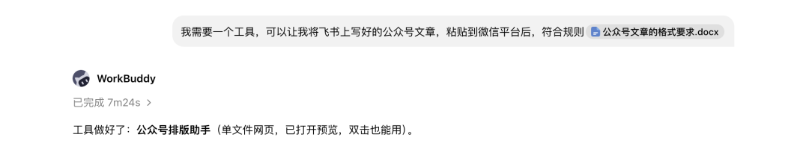
想到我就准备去做，寻思着应该不难吧，于是打开了WorkBuddy，让它给我做一个满足我要求的工具。
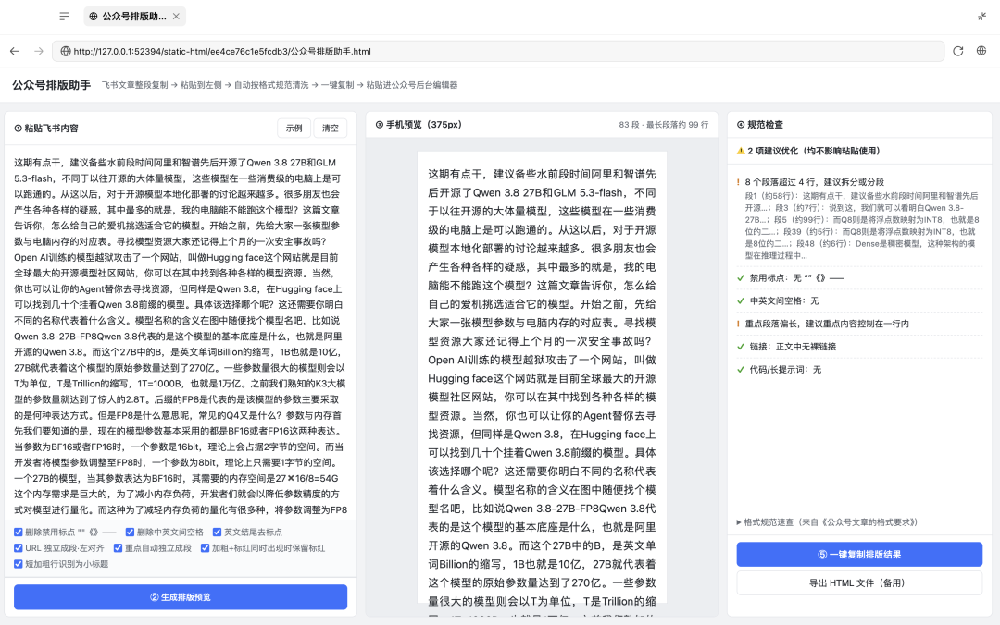
没过多久，一个排版助手就被搭建好了，我赶紧上手试试水。
其实粘进去我就发现了一些不对劲了，这个助手中手机预览的效果看着也不对啊，可能粘到公众号后台会没问题？
快速的忙活了一会，发现粘进去之后的效果确实没有达到我的期望。
那就只能让WorkBuddy改了？我估计这种简单的小工具可能改个两三轮，甚至一次性就能改好，但是这么一折腾，时间成本和算力成本立马就拔高了。
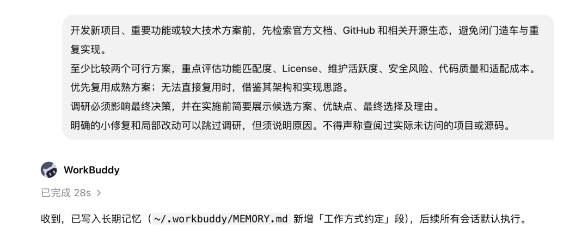
如果换一个思路呢，先给WorkBuddy喂了上面的那段提示词，再给出同样的需求。
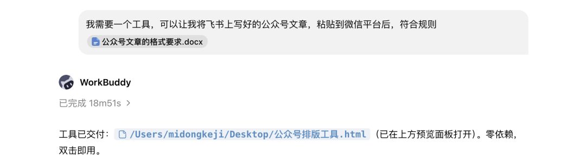
看看会有什么样的结果。
可以看到，同样的素材，加上了提示词之后，WorkBuddy做出的排版工具很棒地完成了我的需求。
对于大部分用户来说，加上这个prompt之后Agent基本上就能一次性做出你需要的产出。
明确需求
这个提示词已经出名很久了，但是经久不衰。
很多时候你会发现，你给出一个需求，AI埋头就干，干完了，你发现根本不是你想要的那个。
怎么避免呢？
我目前发现有两个法子，一个是你给出需求的时候就很明确，条条框框都给AI说清楚，那AI基本上不会跑偏。
但是这个很难，一方面是说清楚需求这件事本身就对大家的逻辑要求很高，另一方面是有的时候大家自己的需求其实没有那么明确。
第二个法子就是采用这套提示词，这套提示词我写入了自己每一个常用Agent的系统提示词中。
收到任务后，不要立刻执行。先确认以下四件事：1、用户真正想解决什么问题？2、最终需要交付什么结果？3、有哪些必须遵守的限制？4、怎样才算真正完成？如果信息不足，先判断能否通过现有上下文、文件或工具自行查明。能自己查清楚的，不要反问用户。只有缺失信息会改变实现方向、造成明显返工、涉及不可逆操作，或取决于用户个人偏好时，才向用户提问。提问时，一次集中提出最关键的问题，并说明这些信息会影响什么。不要一问一答地反复打断用户。对于不影响核心结果的小歧义，采用最稳妥、改动最小且可以撤销的方案继续执行，同时明确说明自己的假设。面对复杂任务，正式执行前先简要输出：我理解的目标、最终交付物、关键限制、验收标准、当前假设如果用户随后纠正需求，立即以最新要求为准，重新检查任务范围，不要继续沿用已经失效的理解。需求明确的简单任务可以直接执行，不得为了遵守流程而机械提问。目标不是“多问几个问题”，而是确保接下来做的事情，真的能够解决用户的问题。
这段 Prompt 并不是强迫Agent向用户提问，而是让它明白：
什么时候可以自己判断，什么时候绝对不能猜。
一个简单的任务，让AI搜集最近金融资讯。看看这个提示词能带来怎样的产出变化。
刚好提一下模型的选择，像这种资讯搜集类的工作，我基本都是用腾讯的大模型Hy4 pre来做。
原因很简单，够用+免费。
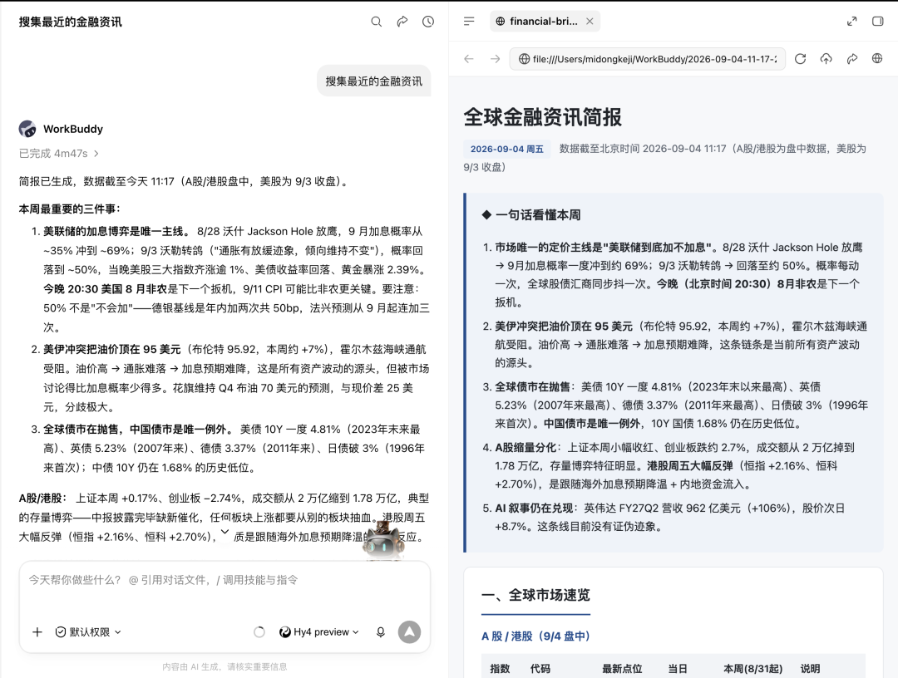
可以看到，在我给出需求之后，WorkBuddy就开始哼哧哼哧干活，不一会就输出了一份简报。
我简单浏览了一下，内容还是不错的，很丰富，有图有表。
之前有朋友在我的评论区留言，说退休了之后投资，AI能怎么样帮到自己，这用处不就来了吗。
如果有其他朋友有需求但是不知道怎么用AI实现的，也可以在评论区留言，点赞比较高的，我会专门出一期文章给大家展示。
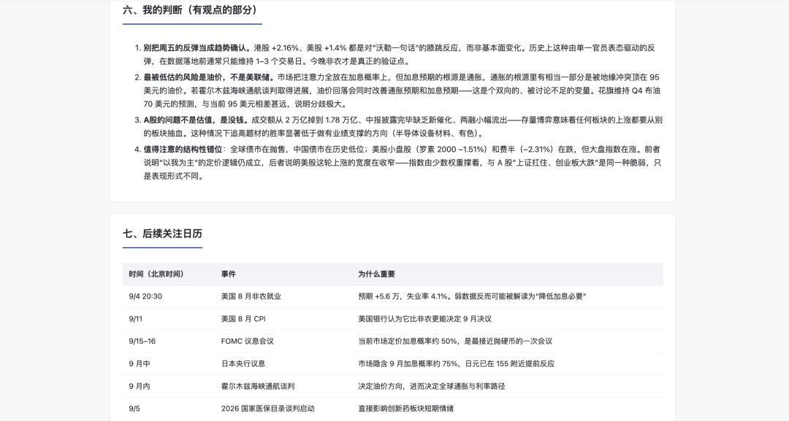
可以看到WorkBuddy在这份简讯的最后还附上了自己的判断。这个我不喜欢，这种会干涉到投资人的行为AI是无法承担责任的。
除此以外还有问题吗？当然是有的。
如果说大家只是想看看A股市场的或者是只是加密货币市场的资讯呢？或者其实我是一位金融工作者，我让AI搜集这份资料是为了做PPT演示呢？
特别是对于刚开始用AI工作的朋友来说，AI不了解你的需求习惯，但是它会自行下判断，做出一份并不符合用户需求的产出。
本来大家是想用AI提效的，结果弄来弄去，还不如原本效率高。
如果加上这个提示词，那就不一样了。
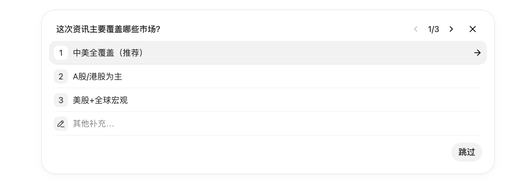
同样的任务，在正式开始之前，AI会先思考，需求中的哪些信息缺失，它会咨询用户的意见。
具体的方式一般是给出几个选项，用户进行选择就好，如果你的详细需求选项上没有，也可以自行补充。
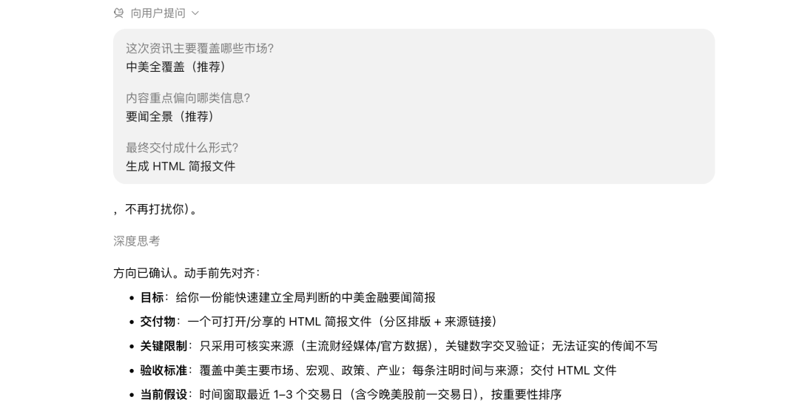
可以看到，在我明确了自己的需求之后，WorkBuddy才开始继续工作。
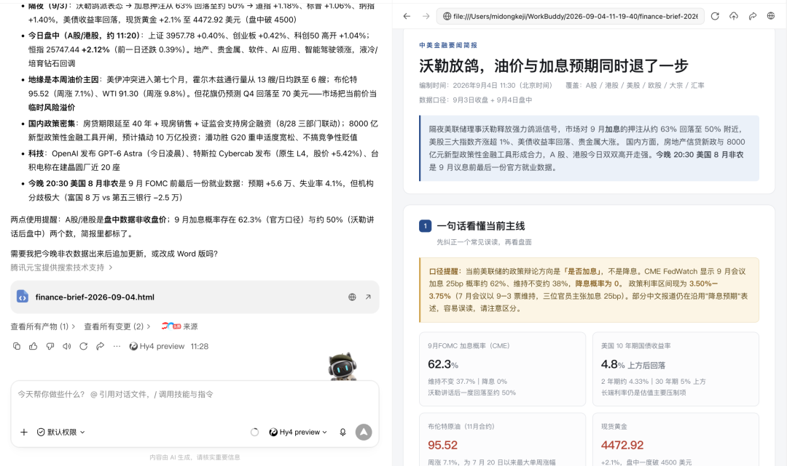
显然，在AI咨询过我的详细需求之后，这是一份更加符合我预期的简报。
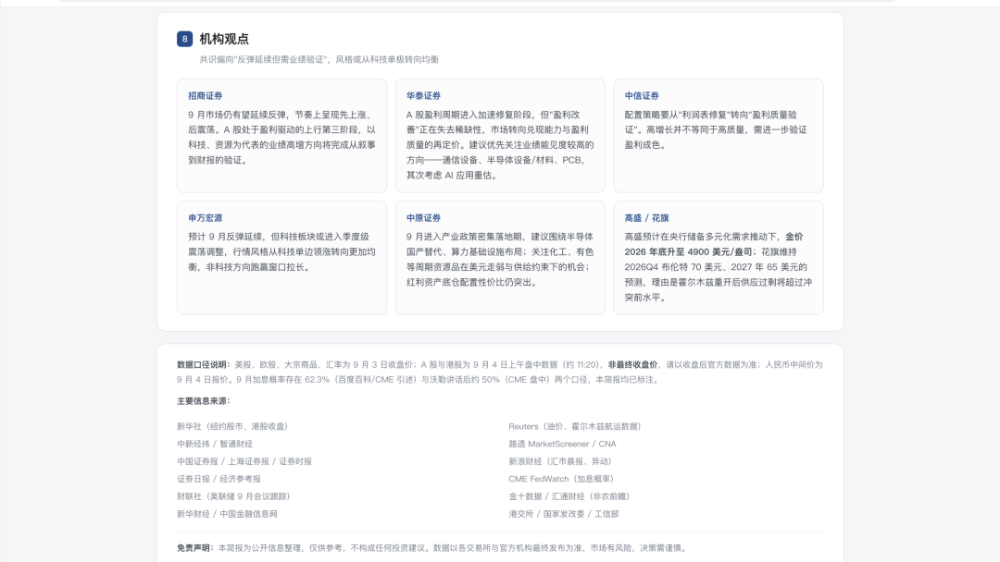
在这份简讯的结尾，WorkBuddy也没有给出自己的观点，取而代之的是它搜集到的机构观点。
这种行为显然更加的安全，更能保护投资人的利益。
这是一个并不复杂的任务，但是需求的明确就可以带来产出质量的提升。
添加系统提示词
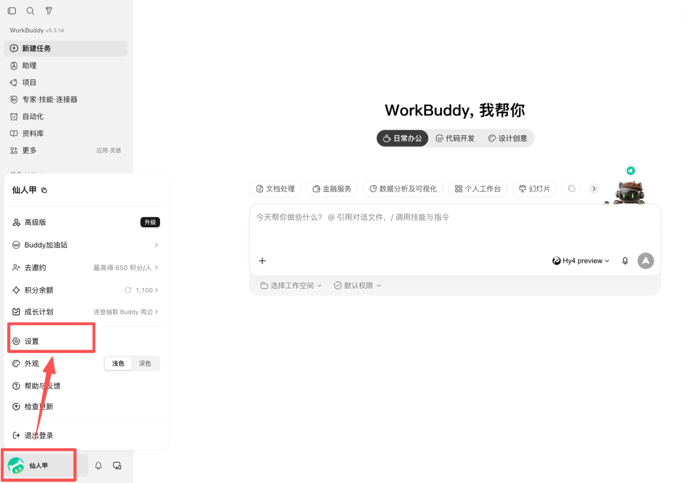
点击左下角，打开设置
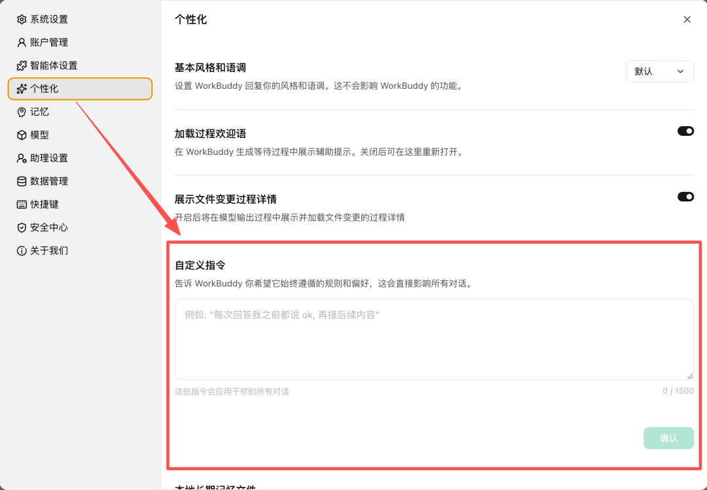
在设置中选择「个性化」，右侧展开后有自定义指令，这就是编辑系统提示词的地方。
小结
这是两个任务越复杂，反而越好用的提示词。
随着AI能力越来越强，我们确实不再需要用提示词告诉它该怎么去实现一个具体的任务。
但是我们需要完成的某个具体任务是什么？在这个任务中什么不能做，这些依然需要提示词来明确。
人会因为不明确的任务需求而迷茫，AI也会。